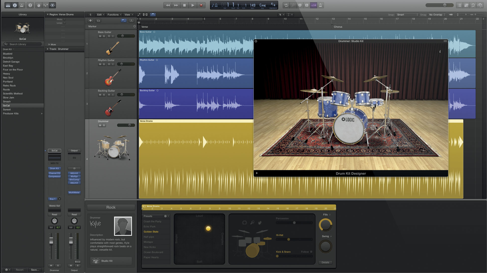

I love music. So much that most of my life has been dedicated to learning more about music theory and learning how to play well with others that are experienced in different genres of music. I am a studio musician, have been playing music for over 20 years, and woke up one day ready to add to my own skillset by adding code into my life.
Two weeks ago I woke up one day realizing my life playing music in Los Angeles might not be enough to take care of me one day- for sure not a family. I figured the smartest thing I could possibly do is to add computer coding into my repetoire. This way I may one day be be more valuable to a game design company additionally with a background in audio production, music theory, and some knowledge understanding some languages of computer code.
